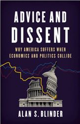

收录于合集

简 介
【 作者 】
艾伦·布林德(Alan Stuart Blinder)，生于1945年10月14号，是美国的经济学家。前联邦储备委员会副主席，普林斯顿大学经济学教授，是克里的另一重要幕僚。
【整理 】王国欣
【 文章来源 】
Foreign Affairs, Vol. 98 Issue. 1, Pages 119-128.
【期刊介绍】
Foreign Affairs ，成立于1922年，是美国外交关系委员会发布的国际关系和美国外交政策的美国杂志，被誉为“美国最具影响力的外交政策杂志”之一。根据2014年的期刊引文报告（Web Of Science）, 该期刊的影响因子为2.009，在“国际关系”类别的85种期刊中排名第6。

核心观点
作者认为自由贸易的观点之所以未能深入民心是因为一下三个原因：比较优势概念与直觉相悖；政治具有天然的反自由贸易倾向；经济学赖以支撑的世界观与大多数人的世界观不同。为了使民众更加清晰的了解自由贸易的意义，一方面政府应该妥善处理因自由贸易而失业的人群，另一方面经济学家应该强化公众对自由贸易和技术进步之间关系的认知。
引 言
“我们必须要注意进口不能超过出口，否则我们就是在榨干自己而滋养他人。”这句话被认为是英国外交官托马斯·史密斯在1549年所写，是最早的“重商主义”思想之一。从现在来看，这句话可以很轻易的反映在特朗普推特的言论上，因为他是如今最为突出的重商主义者。特朗普认为贸易逆差意味着美国的损失，而且很多美国人似乎同意这种观点。
当然，亚当斯密和大卫李嘉图反对重商主义倡导自由贸易的观点流行了200多年，他们的观点似乎得到了几乎所有经济学家的认可，但在普通民众身上影响甚小。民调显示只有很少的民众支持自由贸易而且很少有人能够真正理解其价值。
首先，不像其他的经济概念，如供给和需求，认为两国会通过自由贸易而共同获益的比较优势这一概念是违背直觉的。其次，自由贸易的捍卫者也面临着来自民粹主义的政治家和资金充足的对手的挑战。更为糟糕的是，经济学家似乎从根本上误解了大多数人对经济价值的认识。为此，政府应该采取更多措施来帮助这些被自由贸易所伤害的人，但通过建立政治联盟来处理这一问题是很难成功的。经济学家虽然应该做好与公众的沟通，但至少在今天他们应该接受这样一个事实：让大多数人相信自由贸易的价值的努力必然失败。
主要内容
过去与现在
自二战以来，对国际自由贸易价值的一种信赖主导了西方国家政府的政策选择。鉴于大萧条因各国对贸易的限制而加剧以及二战中国际贸易中断的事实，备受惊吓的世界各国开始建立一个新的、更加强大的贸易体系。关贸总协定、欧洲经济共同体、北美自由贸易协定以及很多其他的自由贸易条约等纷纷出现。
在此期间，美国是国际主义者和自由贸易的倡导者，并且在大国合作中发挥领导作用。自20世纪30年代斯穆特- 霍利关税法后，美国所征收的关税一直在降低，尽管也有几次反弹。美国领导了GATT、 WTO以及之后的几轮贸易谈判，签订了很多双边贸易协定。但仔细观察的话可以看出，美国的贸易政策似乎更具有保护性。拿NAFTA为例，虽然在1994年生效并且代表着西半球自由贸易的进一步发展，但还有很多墨西哥农民由于配额的限制不能将所生产的西红柿出口到美国，墨西哥很多货车也不能通过美国的边界，尽管NAFTA做出了正面规定。
虽然存在这些局限，但民主党和共和党的领导人都支持自由贸易，这一点直到最近才发生变化，尤其是特朗普政府。在2016年总统选举中，他的保护主义纲领在很多观察者中产生巨大震荡，但特朗普并没有隐藏其企图而是公然倡导并最终取得了选举的胜利。自从掌权以来，特朗普一直在践行着他的反贸易承诺，他退出了好不容易达成的TPP并且威胁如果没有与加拿大和墨西哥达成新的贸易协定就终结NAFTA、对进口的钢和铝增加关税、发动与中国的贸易战并对其他贸易协定表示敌意。特朗普的一系列行为几乎没有付出什么政治代价，而且获得了共和党的支持。
特朗普之所以能够将如此之多的美国人推到16世纪的重商主义思维中，是因为大多数美国人对自由贸易的理解是很浅显的。民调显示民众对贸易的支持程度取决于“自由贸易”意味着什么，问题如何提出以及什么时候提出。单独来看，自由贸易这一概念似乎是受支持的。但当用“全球化”这一概念时，民众的态度则发生变化，而当将具体的工作纳入到问题中时，公众的态度则更加恶化。因此，美国人似乎更接受自由贸易这一抽象的概念，那么为什么经济学家没能成功地使自由贸易的真正含义贯彻到民众之中？
违背直觉
其中最明显的原因是比较优势的概念是违反直觉的，而其他的经济学概念比如供需变化与价格之间的关系以及斯密提出的看不见的手则并非如此。
例如，假设国家A比国家B生产的任何产品都价格低廉，两国在自由贸易中会同时获益吗？还是A国的低成本导致B国家高成本的工人失业？对于这两个问题，李嘉图认同前者，因为各国可以利用比较优势专门生产某一种产品。但从直觉来说，后者更合理，因为自由市场导致生产成本更低的商家获益。李嘉图的观点是正确的，但需要时间去理解，复杂的观念很难轻易的解释清楚一直是残酷的事实。
当然，缺乏理解并不是导致大众怀疑贸易价值的唯一原因。一些完全理解贸易理论的人也有很好的理由来反对自由贸易。因为连最基础的贸易理论都表明自由贸易的每一步强化都会产生胜者和败者。例如，如果美国取消钢铁关税，那么外国钢铁的大量进口会伤害国内的钢铁公司并导致一些工人失业，这些人很容易将自己视为自由贸易的受害者。
比较优势理论认为自由贸易对一个国家整体带来的好处多于损失，因此，如果美国的政策可以弥补失业者的损失并且还有剩余，那么自由贸易的价值就会凸显。但美国政府以及其他国家的政府都没有做到这一点。美国虽然有一些弥补项目，但却缺乏资金支持因而很难成功。
此外，自由贸易所带来的收益和损失的分配存在不同程度的影响。自由贸易所带来的收益是广泛分布的，因此对于大多数人来说是看不到的；但所带来的损失是集中的，因而是高度可见的。当从整体来思考时，经济权衡很明显会支持自由贸易，但政治权衡却并不会如此，经济学家和政治家所关注的侧重点不同，这是一个很难解决的问题。
经济和政治之间的分歧被舒尔茨所说的“非直接原则”进一步强化。在现代经济生活中，虽然人们不断遭受着来自不受自己所控制的经济变化带来的伤害，但大多数伤害没有明显的来源。如果这种伤害能够直接追溯到政府的行为上，那么政治家就需要付出政治代价。
例如，尽管自由贸易是人类社会生活中的一种常态化存在，人们对日常生活中因自由贸易所产生的胜负并没有太多抱怨，但贸易协定与此不同。贸易协定是政府之间有意签订的，因此，因贸易协定而遭受损失的人知道政府是自己失业的罪魁祸首。
此外，在国会中要想通过与其他国家签订的自由贸易协定，就需要获得大公司的支持。但这种联盟虽然会发挥作用，也存在弊端。首先，将更高的出口视为主要目标，这为重商主义增加了政治权重。其次，这强化了左派将自由贸易视为大公司战略产物的印象，毕竟在特朗普之前，美国的保护主义主要来自民主党。
卢德派和重商派
卢德派的失败和重商主义不断重现的幽灵形成鲜明对比，技术和贸易似乎在公众观念上占据不同地位，其中卢德失败了，而托马斯·史密斯则仍旧盘旋。
新技术所摧毁的工作几乎远远超过贸易，但尽管存在对机器人的恐惧，我们却很难发现如今会有人会因为失业的代价来反对技术进步。相反，由技术进步造成的失业被视为不可避免的，而且是一种进步的代价。但由贸易导致的失业则被视为生活中的反派，需要加以阻止。
虽然经济学家认为技术进步和自由贸易所带来的影响是相似的，即两者都以少数人失业为代价来为更多人提供更高的生活标准，而且技术进步甚至被视为自由贸易的主要驱动力。但大多数人以及政治家并不认为在促进技术进步和反对自由贸易之间存在矛盾。反对技术进步是愚蠢的，但反对外国人却并非如此。而且与硅谷不同，国外出口商在国会中并没有代表，因此为特朗普这种寻找替罪羊的行为提供了便利。
不同的世界
除了缺乏公众的理解和与政治诱因相悖之外，另一个经济学家之所以不能将自由贸易精神贯彻到民众之间的重要原因可能是哲学意义上的：支撑经济学的世界观与大多数人的世界观存在巨大差异。
经济学家的核心目标是以尽可能低的成本生产商品和服务并将这种商品和服务分配给需要的人。任何一本经济学的基础教材都描述了这一目标，并提出自由市场是如何实现这一目标的途径。因此，总的来说，经济学家关注的是消费者的福利。
但生产者的福利即便别纳入到考虑之中也是次要的。在经济学家眼里，公司的存在是为了服务消费者的福利。工作只是为了支撑消费而获取收入的手段，并不是满足的直接来源，也不是自我价值的来源。生产者的利益，包括人们从工作中获得的价值，在标准的经济学计算中即便有也仅占很小的比重。而且实际上，工作被视为消极的——人们虽然不喜欢但却为了消费而不得不做。
但如果经济学家是错的呢？如果人们既关心作为生产者的角色（即工作）又关心所消费的商品和服务怎么办？也许公众认为经济体系的核心价值在于提供一个很好的工作而不是提供廉价的产品呢？如果这样的话，比较优势理论将变成让人们选择更具生产力因而收入更高的工作的不同工作之间的优势了，但这明显和经济学一直以来的研究不符。
但生产者视角似乎主导了公众思维，民调显示大部分美国人愿意付出更多的代价来购买本国生产的产品或支持重谈贸易协定。当然，这么说是很容易的，在实际中却很难实现。尽管民调中的观点对民众日常的消费行为影响不大，但对政治家的影响却很大。
自由贸易的精神能否得以贯彻？
尽管很难解决公众不能理解自由贸易真正的意义这一问题，但经济学家和政策制定者可以用其他方式来减缓对自由贸易的反对程度。
美国政府应该向帮助失业人群再就业的项目投入更多的资金，来帮助那些因为自由贸易而失业的人。经济学家则应该努力增强人们观念中自由贸易和技术进步之间的联系，这样会有助于澄清公众对自由贸易的偏见。例如，借助技术进步而发展的网购促进了贸易的发展，那么美国人民是否愿意为了反对贸易而放弃使用亚马逊呢？
经济学家和政治家有很多选择可以做，尽管不一定会成功。但悲哀的是，更多、更重要的问题却不会发生变化。例如，比较优势理论的确是违反直觉的，因此很难让公众完全理解。政治考量确是从根本上来说存在对自由贸易的偏见，因而那些支持自由贸易的人很难避免因自由贸易所带来损失的指责。此外，左翼相信贸易仅仅有助于大公司的观点也不会发生变化。最为根本的是，如果消费者更加关注优质的工作而不是廉价的商品，那么标准的经济学观点将难以说服他们接受自由贸易。考虑到上述这些问题，经济学家应该庆幸国际贸易并没有陷入到比现在更糟糕的境地。
点击“阅读原文”可获取原文pdf版
更多阅读
国政学人 （ID：guozhengxueren)
为方便学人及时阅读高质量文章
别忘把国政学人设置 星标 哦~